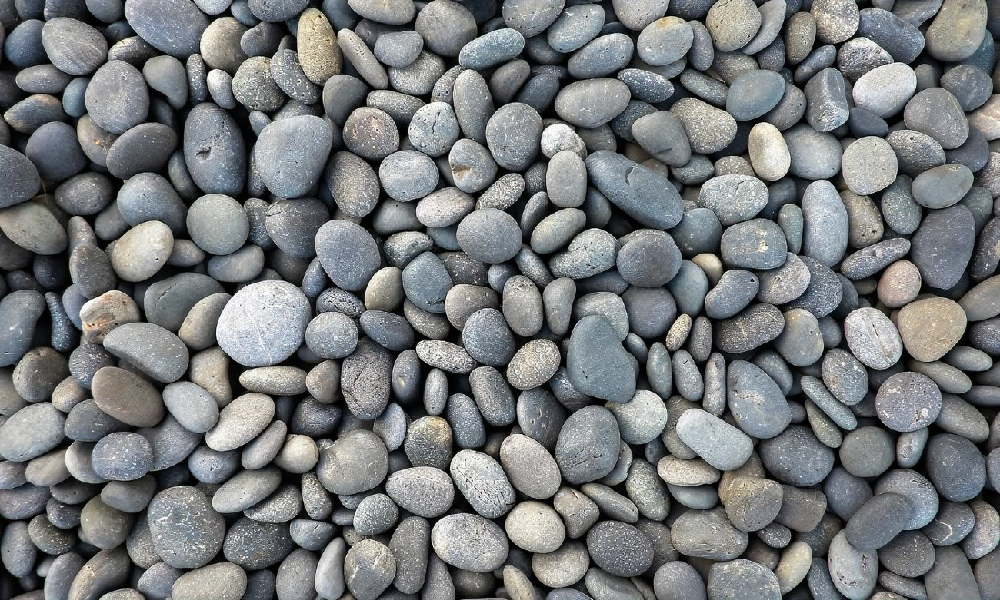

🪨 Piedra Canto Rodado 1" a 2"

La piedra canto rodado de 1 a 2 pulgadas se caracteriza por su forma redondeada y suave al tacto, resultado de un proceso natural de desgaste en ríos o de tratamiento artificial. Su tamaño mediano la convierte en una opción versátil y estética para una amplia variedad de aplicaciones en exteriores e interiores.
Usos recomendados:
- 🌿 Decoración de jardines: Ideal para delimitar senderos, bordes de macetas o cubrir superficies en jardines zen y paisajismo moderno.
- 🚿 Drenaje y filtración: Perfecta para rellenar zanjas o sistemas de drenaje, ya que permite un buen paso del agua y evita la compactación del suelo.
- 🏠 Decoración de interiores: Puede utilizarse como elemento decorativo en fuentes, maceteros, vitrinas o incluso pisos con resina epóxica.
- 🧱 Diseño de exteriores: Muy usada en patios, terrazas, caminos y entradas por su resistencia y estética rústica pero ordenada.
- 🌊 Fuentes y cascadas artificiales: Gracias a su forma y tamaño, produce un sonido relajante al interactuar con el agua.
Beneficios:
- Alta resistencia a la intemperie y durabilidad.
- No requiere mantenimiento constante.
- Aporta una apariencia natural, ordenada y elegante.
- Disponible en diferentes colores según stock: blanco, rojo, gris, beige, mix.
Presentaciones disponibles:
- Bolsa de 20 kg
- Bolsa de 40 kg
- Precio por metro cúbico (bajo pedido)
Colores más comunes:
⚪ Blanco | 🔴 Rojo | ⚫ Gris | 🟤 Mix Natural | 🟡 Beige
Consulta por descuentos por volumen y asesoría para tu proyecto.
Bolsa de 20 kg
Bolsa de 40 kg
Precio por metro cúbico (bajo pedido).